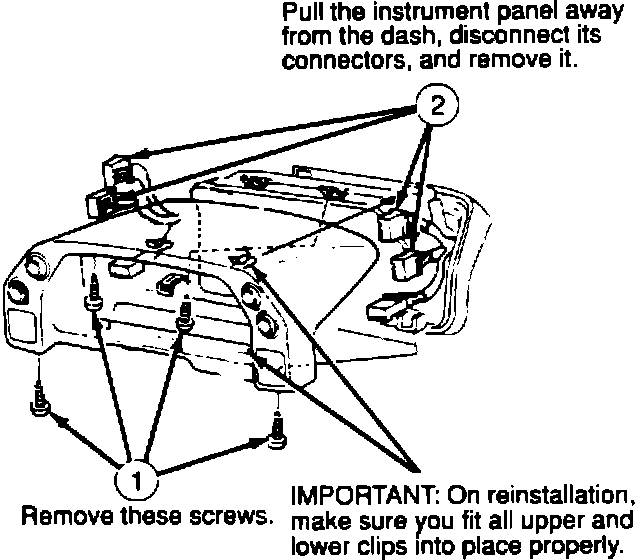
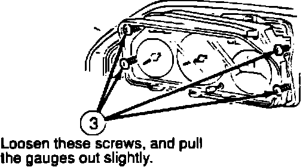
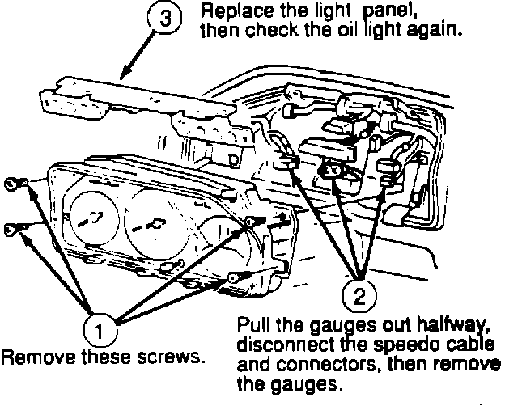
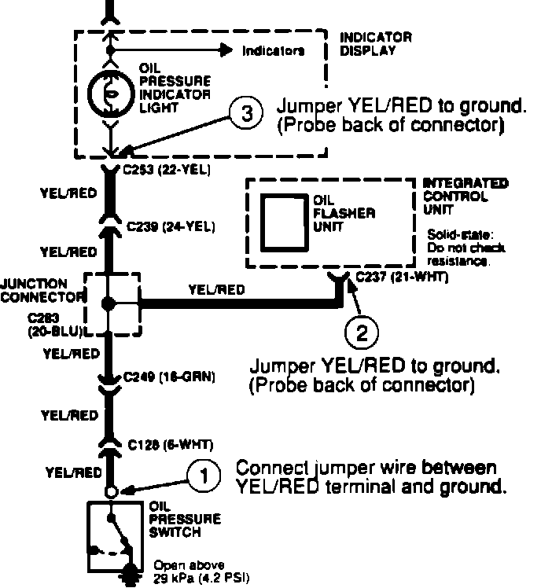

Engine - Low Oil Pressure Light Flashes
91acura03
YEAR MODEL VIN APPLICATION
'86 -'90 LEGEND ALL
April 29, 1991
BULLETIN NO 90-013
Low-oil Pressure Light Flashes (Supersedes 90-013, Low-oil Warning Light Flashes, dated June 25, 1990)
SYMPTOM
The low-oil pressure light "blinks" at random for no apparent reason: Oil pressure at idle measures more than 10 psi, and oil level is at "full" on the dipstick.
PROBABLE CAUSE
A faulty solder joint on the printed circuit board.

CORRECTIVE ACTION
Check and replace the printed circuit board. If the board is OK, check for an open circuit in the YEL/RED wire.
1. Partially remove the gauges from the dashboard.

2. Turn the ignition switch to "ON," and wiggle the ribbon cable (at the left side) between the two panels.

3. If the oil pressure light flashes when the cable moves, the cable's solder joint may be faulty. Replace the light panel. If the light doesn't flash, go on to step 4.

4. Disconnect the oil pressure switch, then check for an open circuit. Turn the ignition to "ON," and connect the YEL/RED wire to ground in three places in the sequence shown. The oil light should go on each time; if it doesn't, find and repair the open. (If it flashes, turn the key off-and-on to reset the flasher, and try again.)
PARTS INFORMATION
Indicator light panel:
'86 - 87 4-door 78145-SD4-A01
'88 4-door 78145-SG0-A02
'89 - 90 4-door 78145-SD4-A11
'87 - 90 Coupe 78145-SG0-A02
WARRANTY CLAIM INFORMATION
In warranty: The normal warranty applies.
Out-of-warranty: Any repair performed after warranty expiration may be eligible for goodwill consideration by the District Service Manager. You must request consideration, and get the DSM's decision, before starting work.
Operation number: 745140
Flat rate time: Replace panel: 0.8 hour
Failed P/N: 78145-SD4-A01
Defect code: 066
Contention code: B99